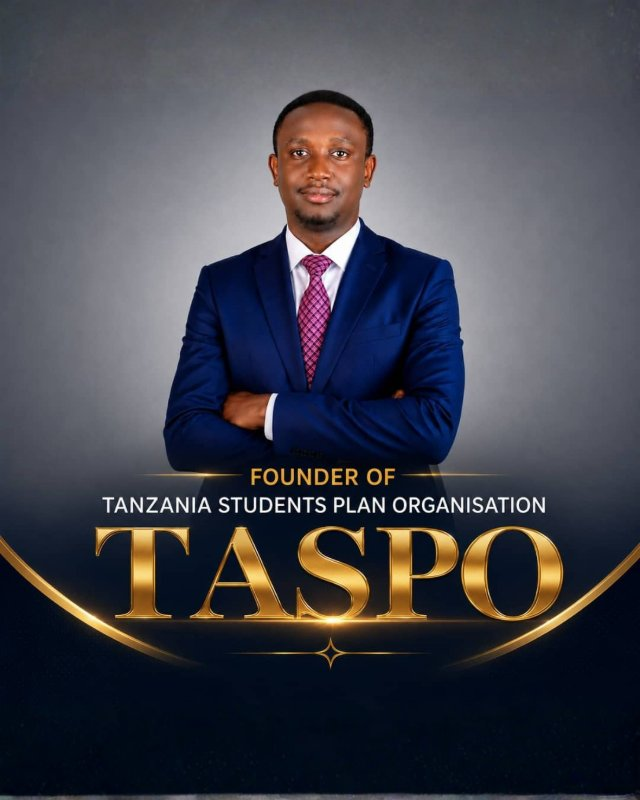
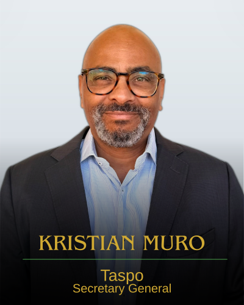
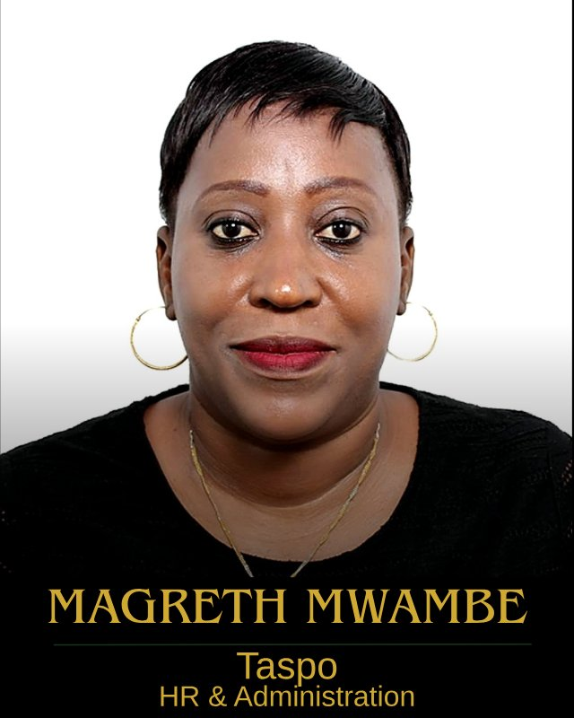
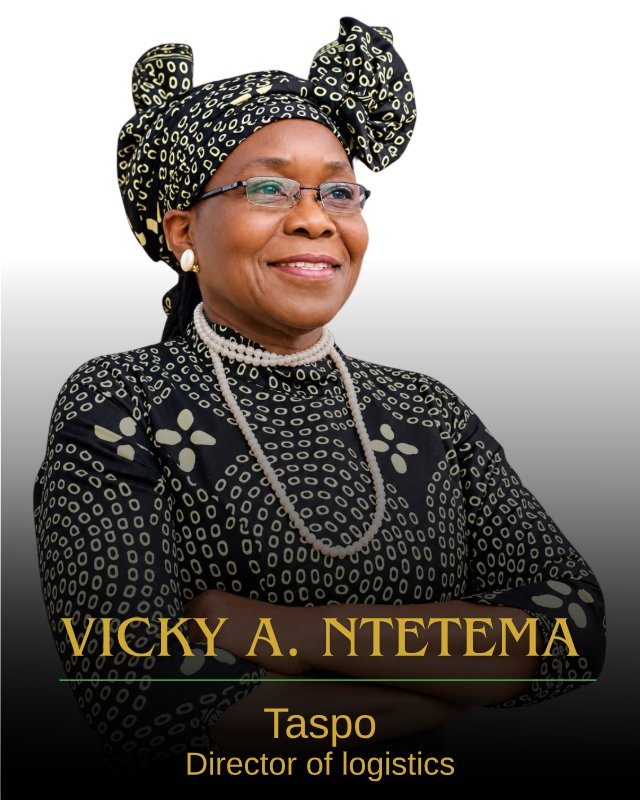
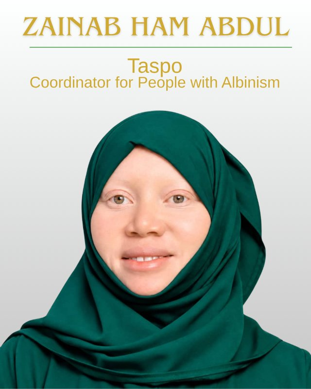
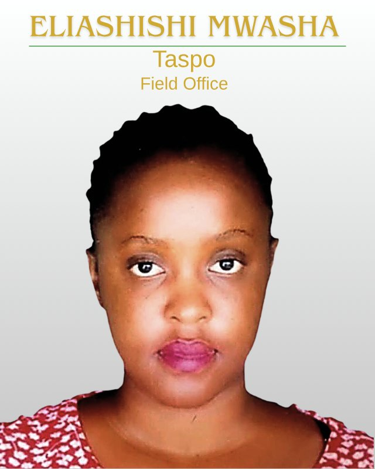
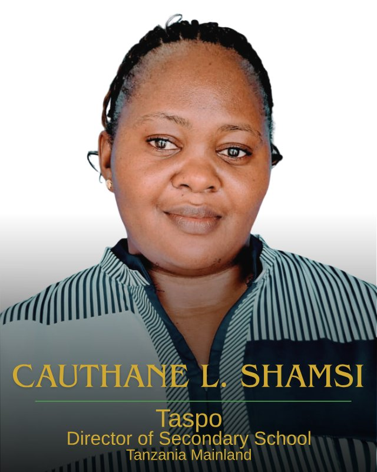
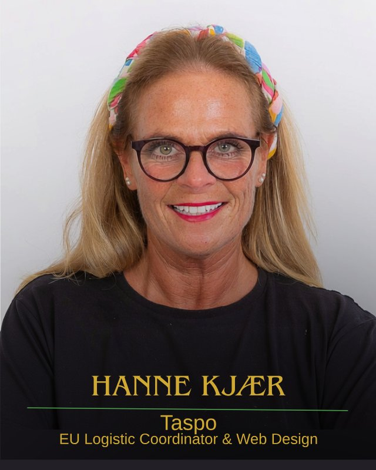
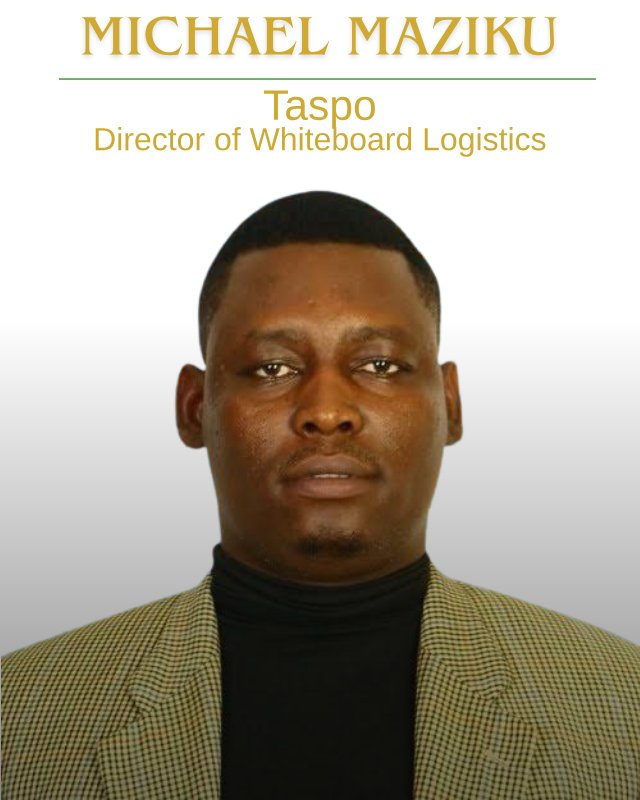

From the founding vision to day-to-day delivery in classrooms across Tanzania — the people driving TASPO's mission forward.

Shilekirwamuu Israel Mwasha, born on 1st May 1992 in South Wales, England, United Kingdom, is the founder of the Tanzania Students Plan Organisation (TASPO).
His journey toward establishing TASPO was shaped by his educational experiences, personal observations, studies, and a growing conviction that students should be prepared not only to pass examinations, but also to understand, plan for, and actively participate in real life.
One of the most important influences in the development of his vision came during his time at Mwandege Boys Secondary School in Mkuranga. At the school, students experienced an environment that encouraged them to manage and utilize their time responsibly, without depending entirely on school bells. This experience taught him an important lesson: education is not merely about the A's or B's we receive, but about the application of knowledge in the real world.
Through his studies, experiences at school, and observations of society, he continued to develop the idea that students needed an organized platform through which they could learn to plan, organize, cooperate, and prepare themselves for the future.
After reflecting on everything he had learned from school, his studies, and the observations he had made throughout his educational journey, on 1st November 2007, while he was at Mwandege Boys Secondary School, Shilekirwamuu Israel Mwasha made a significant decision: he would write down his vision and tasks for what he believed could become a students' organization.
This was a defining moment in the history of TASPO.
The idea was no longer simply an observation or a personal thought. He began putting the vision into writing by developing what he referred to as the TASPO Taskbook — a written foundation for the tasks, responsibilities, objectives, and direction of the organization he envisioned.
The date 1st November 2007 therefore represents an important milestone: the day the TASPO vision was formally put into written form.
His inspiration was strengthened by the ideas and quotations he encountered in The Map of Life, which encouraged him to think about life beyond the classroom and the importance of planning one's journey.
Another important part of his vision was inspired by his experience at Mwandege Boys and by observing his father, Israel Mwasha, teaching with a whiteboard.
These experiences helped him recognize that simple improvements in educational environments could have a meaningful impact on students and teachers. This later contributed to the development of TASPO's interest in promoting whiteboards as an alternative to traditional chalkboards, as part of a broader effort to improve learning environments.
The founder sincerely acknowledges Mr. Enock Walter, Chief Facilitator of Mwandege Boys Secondary School, whose leadership and educational environment played an important role in shaping the experiences that contributed to the original TASPO vision.
From the lessons learned at school, to observations of society, to the decision made on 1st November 2007 to begin writing the TASPO Taskbook, the journey reflects a central belief:
Students are not simply recipients of education. They are planners, innovators, problem-solvers, and future leaders who can participate in creating a better society.
This belief remains at the heart of the Tanzania Students Plan Organisation (TASPO).
Kristian Muro serves as TASPO's Secretary General, helping guide the organisation's day-to-day work alongside the Board of Directors and fellow office bearers — working to bring TASPO's mission of technology access, teacher training and life-skills education to classrooms across Tanzania.


Magreth Mwambe is a dedicated Human Resources professional and an important member of the leadership team of the Tanzania Students Plan Organisation (TASPO). She brings valuable experience in human resources management, personnel coordination, workplace organization, and people development.
Before joining TASPO, Magreth served in the Human Resources department at DHL, a globally recognized transportation and logistics organization. Her experience in such a professional and international working environment strengthened her understanding of employee management, recruitment, workplace coordination, staff welfare, and organizational administration.
At TASPO, Magreth serves as the Human Resources Director, where she plays a central role in building and strengthening the organization's human capital. She is responsible for helping TASPO identify, mobilize, coordinate, and support qualified personnel who can contribute effectively to the organization's mission and programs.
Her responsibilities include personnel mobilization, recruitment coordination, staff placement, employee relations, workforce organization, and supporting the development of a professional working culture within TASPO. Through her role, she helps ensure that the right people are connected with the right responsibilities and that TASPO continues to develop a capable and committed team.
Magreth is recognized for her professionalism, organizational ability, commitment to people, and capacity to work with different individuals and teams. Her experience allows her to serve as an important bridge between TASPO's leadership and its workforce.
As TASPO continues to expand its activities and reach more students and communities, Magreth's contribution in human resources remains essential to building a strong, responsible, and effective organization.
Her vision within TASPO is to help build a professional human-resource system where every person is given an opportunity to contribute their skills, develop their potential, and participate meaningfully in the organization's mission.
“Building the People Behind the Mission.”
Vicky is an investigative journalist and former BBC bureau chief with extensive experience in evidence based reporting, public advocacy, and protection of vulnerable communities. Through her work with SMOTA, an organisation that promotes the rights of mothers of persons with albinism, she regularly engages with children with albinism and supports efforts to meet their educational and health needs.
Although retired from her role as Executive Director of Under The Same Sun (UTSS), she continues to provide occasional consultancy on issues relating to disability inclusion, child protection, and safe learning environments. Her professional background includes extensive collaboration with schools that accommodate students and teachers with albinism, particularly in strengthening classroom accessibility for low vision learners.
Vicky brings to TASPO a commitment to factual, evidence based advocacy and practical solutions that enhance the wellbeing of both students and teachers.


Zainab Ham Abdul is a dedicated member and coordinator of the Tanzania Students Plan Organisation (TASPO), serving in a special role focused on strengthening TASPO's connection with people with albinism and ensuring that their voices, experiences, and needs are recognized within student and community development initiatives.
Zainab Ham Abdul is regarded as a committed, compassionate, and dependable personnel who understands the importance of inclusion and equal opportunity. Through the coordination role, Zainab Ham Abdul helps create a bridge between TASPO and people with albinism, encouraging communication, participation, advocacy, and cooperation.
The role is particularly important because people with albinism may experience challenges related to vision, sensitivity to light and ultraviolet radiation, skin protection, discrimination, and social misconceptions. Organizations working with people with albinism therefore place importance on awareness, education, health protection, inclusion, and human rights.
Within TASPO, Zainab Ham Abdul's responsibility is to help ensure that people with albinism are not left behind in programs involving education, student participation, research, empowerment, leadership, and community development.
One of Zainab Ham Abdul's greatest contributions is the ability to serve as a link between TASPO and the albinism community. Through this position, Zainab Ham Abdul can help TASPO understand challenges affecting people with albinism directly from their experiences and support the development of programs that respond to those realities.
The position reflects TASPO's broader commitment to ensuring that students and young people from different backgrounds have opportunities to participate, contribute, and be heard.
Zainab Ham Abdul's work is built around the principle that every person deserves dignity, respect, protection, education, and equal opportunity. This approach is consistent with wider advocacy work in Tanzania, where organizations supporting people with albinism emphasize protection, education, health awareness, empowerment, and the fight against discrimination.
As TASPO continues developing its programs and expanding its engagement with students and communities, Zainab Ham Abdul's role provides an important connection to people with albinism.
Through coordination, communication, advocacy, and community engagement, Zainab Ham Abdul contributes to building a TASPO that recognizes diversity and seeks to ensure that no student or community member is excluded because of albinism or disability.
Inclusion is not simply about giving people a place at the table; it is about making sure their voices are heard and their presence makes a difference.
Eliashishi Israel Mwasha is a dedicated Tanzanian education and field-research professional with a strong passion for working with students, schools, and communities.
She pursued her studies at St. Augustine University of Tanzania (SAUT), Mwanza, where she gained academic knowledge and practical skills that have contributed to her professional development.
Eliashishi has worked extensively as a Task Force Field Officer, a role that has taken her to different schools and communities. Through this work, she has been actively involved in visiting schools, engaging with students, identifying challenges affecting students and education, and conducting various Task Force researches and field studies.
Her work is particularly focused on understanding students' experiences and helping identify practical solutions to challenges within educational environments. By working directly with students and schools, she has gained valuable field experience and a deeper understanding of the needs, opportunities, and challenges facing young people.
As a field officer, Eliashishi has demonstrated commitment, teamwork, research ability, communication skills, and a willingness to work directly with people at the grassroots level. Her experience in schools has also enabled her to build meaningful relationships with students and other stakeholders in education.
Eliashishi Israel Mwasha is also associated with the work of Tanzania Students Plan Organisation (TASPO), where her field experience and understanding of students' issues can contribute significantly to the organisation's mission.
Through her continued involvement in school visits, student engagement, research, and field activities, she represents the importance of listening to students and using research to understand and address their real needs.


Cauthane Lucyia Shamsi is an education professional, youth advocate, and community development leader serving as the Director of Tanzania Students Plan Organisation.
She holds a Bachelor of Arts with Education (B.A. Ed.), specializing in Literature and History, from St. Augustine University of Tanzania (SAUT). Her academic background has equipped her with strong skills in education, communication, critical thinking, leadership, and understanding social and historical issues affecting communities and young people.
As Director of Tanzania Students Plan Organisation, Cauthane provides strategic leadership in initiatives focused on student empowerment, education advocacy, mentorship, leadership development, life skills, and youth development. She is passionate about creating opportunities that enable students to develop academically, socially, and personally.
Cauthane believes that education is one of the most powerful tools for transforming individuals and communities. Her leadership is guided by a commitment to integrity, collaboration, innovation, and service, with a particular focus on ensuring that young people are equipped with the knowledge, skills, confidence, and opportunities they need to become responsible and productive members of society.
Through Tanzania Students Plan Organisation, she seeks to build meaningful partnerships with schools, educators, parents, communities, institutions, and other stakeholders to promote a supportive environment for students and contribute to sustainable educational and social development.
Hanne Kjær plays a dual role in bringing TASPO's mission to life — as the designer behind the organisation's online presence, and as the coordinator who keeps its European supply chain moving. On the technical side, Hanne is responsible for the look, feel and functionality of the TASPO and Shimu website, ensuring the platform reflects the organisation's work clearly and professionally to partners, donors and supporters around the world.
As European Logistics Coordinator, Hanne manages the practical side of turning donations and partnerships into real classroom impact — sourcing equipment and educational supplies from partners across Europe, arranging shipping to Tanzania, and handling the customs and documentation needed to get resources safely into the hands of schools and students. Working closely with European donors and partner organisations, Hanne helps ensure that every contribution moves efficiently from pledge to delivery, connecting European support directly to TASPO's mission of closing the technology gap in Tanzanian classrooms.


Michael Maziku is a dedicated professional serving as the Director of Whiteboard Logistics and Maintenance at Tanzania Student Plan Organization (TASPO).
In his position, Michael is responsible for coordinating and overseeing the logistics, availability, proper use, and maintenance of whiteboards and related educational resources. His work supports TASPO's efforts to improve learning environments and promote effective teaching and communication through modern educational resources.
Michael is committed to efficiency, accountability, teamwork, and proper resource management. Through his role, he contributes to creating well-organized and functional learning environments where students and educators can interact, learn, and share knowledge effectively.
As part of TASPO, Michael is passionate about supporting initiatives that strengthen education, technology, and opportunities for Tanzanian students.
Every partnership, grant and donation helps us reach another classroom, train another teacher, and give another student the tools they need to succeed. If you believe in the power of education to change lives, we'd love to work with you.
Partner with TASPO today